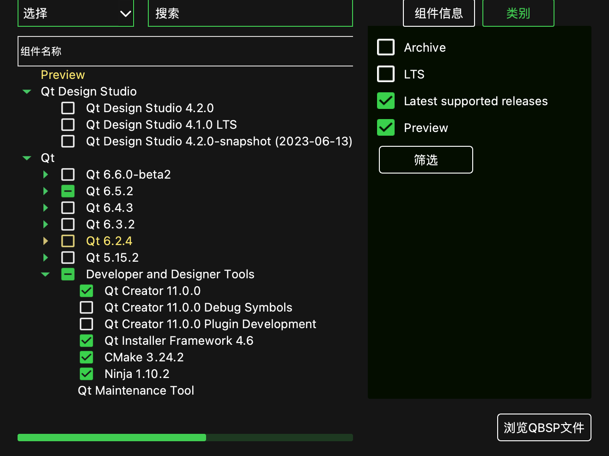
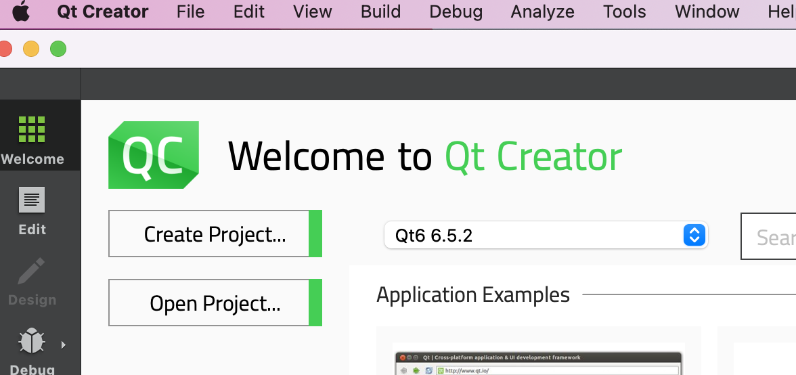
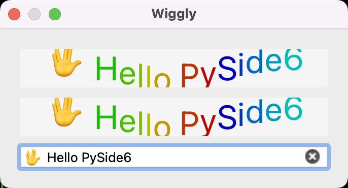

Generates Python bindings for the Qt6 library with PySide6.
Table of contents
I've been using PyQt5 for years which is de facto standard Qt python binding library until PySide2 has been offically announced up by the Qt Company in year of 2018. Five years on, I think PySide is mature enough to be used in production environment. This post request you to have C++ and compiler toolchain knowledge, since I won't explain much about details of CMake syntax and C++ build system.
Walkthrough examples on MacOS
Install Qt environment
If you won't modify Qt C++ source, it is recommanded to install Qt pre-build by download qt installer online and install Qt by clicking next till end. Intaller can be download under https://www.qt.io/download-open-source.
CAUTION: You MUST install Qt same version as PySide! Otherwise the abi consistancy is doomed.
The latest Qt version at the time of writing is 6.5.2 , we will stick to this version here.

You can check which version of Qt you have installed on system. 
If you can see Qt installed under /User/XXX/Qt/6.5.2/, it means you can proceed.
Requirements
- XCode 8.2 (macOS 10.11), 8.3.3 (macOS 10.12), 9 (macOS 10.13), 10.1 (macOS 10.14) or XCode build tools.
- CMake == 3.27.1 (de facto cross-platform C/C++ build system for other build systems)
- Ninja == 1.11.1 (the famous tool
make's modern alternative) sphinxpackage for the documentation (optional).- Depending on your OS, the following dependencies might also be required: libgl-dev, python-dev, python-distutils, and python-setuptools.
I am get used to Anaconda environment, its the same of you to use virtualenv.
Create a new python environment using Python 3.11 (PySide6 only supports Python > 3.8 and it's no difference to use 3.9, 3.10, 3.11), I use 3.11 because it is latest Python version at the time of writing.
conda create --name pyside python=3.11ninja --versioncmake --version
If everything works fine and no output complains about missing something then you can proceed.
Install PySide6!
There is easy way and hard way to install PySide6 in your python environment.
- Easy way:
pip install PySide6. Done! - Hard way: Man you are brave enough! Lets do this.
Download PySide source code! (Hard trip)
Cloning the official repository can be done by:
git clone https://code.qt.io/pyside/pyside-setup
Checking out the version that we want to build, for example, 6.5.2:
cd pyside-setup && git checkout 6.5.2
Install the general dependencies:
pip install -r requirements.txtNOTE: Keep in mind you need to use the same version as your Qt installation
Building PySide
Check your Qt installation path, to specifically use that version of qtpaths to build PySide. for example, /User/XX/Qt/6.5.2/macos/bin/qtpaths. (This qtpaths is a small program to get locations of Qt)
Build can take a few minutes, so it is recommended to use more than one CPU core:
python setup.py build --qtpaths=/User/XX/Qt/6.5.2/macos/bin/qtpaths/qtpaths --build-tests --ignore-git --parallel=8
EWWWWW... ISSUE MET! (Hard trip)
CMake Error at cmake/ShibokenHelpers.cmake:170 (find_package):
Could not find a package configuration file provided by "Clang" with any of
the following names:
ClangConfig.cmake
clang-config.cmake
Add the installation prefix of "Clang" to CMAKE_PREFIX_PATH or set
"Clang_DIR" to a directory containing one of the above files. If "Clang"
provides a separate development package or SDK, be sure it has been
installed.
Call Stack (most recent call first):
cmake/ShibokenSetup.cmake:38 (setup_clang)
CMakeLists.txt:14 (include)
Since I have CommandLineTools installed instead of XCode.app, the CMake can not find my Clang correctly. (Clang is used for static CPP source file
parse for syntax extraction used in binding source file generation).
$ mdfind -name libclang.dylib
/Library/Developer/CommandLineTools/usr/lib/libclang.dylib
I digged into CMake files and found this in ShibokenHelper.cmake:
macro(setup_clang)
# Find libclang using the environment variables LLVM_INSTALL_DIR,
# CLANG_INSTALL_DIR using standard cmake.
# Use CLANG_INCLUDE_DIRS and link to libclang.
if(DEFINED ENV{LLVM_INSTALL_DIR})
list(PREPEND CMAKE_PREFIX_PATH "$ENV{LLVM_INSTALL_DIR}")
list(PREPEND CMAKE_FIND_ROOT_PATH "$ENV{LLVM_INSTALL_DIR}")
elseif(DEFINED ENV{CLANG_INSTALL_DIR})
list(PREPEND CMAKE_PREFIX_PATH "$ENV{CLANG_INSTALL_DIR}")
list(PREPEND CMAKE_FIND_ROOT_PATH "$ENV{CLANG_INSTALL_DIR}")
endif()
find_package(Clang CONFIG REQUIRED)
# Need to explicitly handle the version check, because the Clang package doesn't.
if (LLVM_PACKAGE_VERSION AND LLVM_PACKAGE_VERSION VERSION_LESS "9.0")
message(FATAL_ERROR "You need LLVM version 9.0 or greater to build.")
endif()
# CLANG_LIBRARY is read out from the cmake cache to deploy libclang
get_target_property(CLANG_BUILD_TYPE libclang IMPORTED_CONFIGURATIONS)
get_target_property(CLANG_LIBRARY_NAME libclang IMPORTED_LOCATION_${CLANG_BUILD_TYPE})
set(CLANG_LIBRARY "${CLANG_LIBRARY_NAME}" CACHE FILEPATH "libclang")
message(STATUS "CLANG: ${Clang_DIR}, ${CLANG_LIBRARY} detected")
endmacro()
Which says LLVM_INSTALL_DIR path is used to find libclang, I set the environment variable, but still can't build it correctly, obviously, find_package(Clang CONFIG REQUIRED) needs CMake configuration file to work, so any Clang library
without CMake configuration files can not be used.
Eventually I altered to method which is suggested in QtForPython Getting Started Tutorial > https://doc.qt.io/qtforpython-6/gettingstarted/macOS.html
Setting up CLANG If you don’t have libclang already in your system, you can download from the Qt servers:
wget https://download.qt.io/development_releases/prebuilt/libclang/libclang-release_140-based-macos-universal.7zExtract the files, and leave it on any desired path, and set the environment variable required:
7z x libclang-release_140-based-macos-universal.7zexport LLVM_INSTALL_DIR=$PWD/libclang
And it worked as expected.
Tips of pakcage installation.
After you have built PySide2 project successfully, you will get Official PySide6 package under qfp-py3.11-qt6.5.2-64bit-release
folder in build we create early. There is a lot of Qt*.so in package/PySide6 that ready to be imported by your
python script.
But before we use PySide6 in our python script, we must first install them into our site-packages for python
executable to find.
You can use
python setup.py --helpto see the usage of commandline of setup tool. Or usepython setup.py --help-commandto see detailed argument usage.
The setup commandline tool is powerful, it can generate egg files, wheels and dist-info folder for package distribution.
But here we just use python setup.py install --qtpaths=/User/XX/Qt/6.5.2/macos/bin/qtpaths/qtpaths --build-tests --ignore-git --parallel=8 to install package with dist-info(stores meta information of package for usage).
Test installation
You can execute one of the examples to verify the process is properly working. Remember to properly set the environment variables for Qt and PySide:
python examples/widgets/widgets/tetrix/tetrix.py
Write C++ generate Python bindings for usage.
Level 1: Generate Python bindings for a non-Qt C++ library
https://doc.qt.io/qtforpython-6/examples/example_samplebinding_samplebinding.html
There is a demo of non-Qt C++ library Python binding generation called samplebinding located at PySide/examples/samplebinding.
You can practice this demo by reading the documentation under the folder samplebinding/doc/samplebinding.rst.
If you walkthrough the hard trip and built PySide6 your self, your toolchain environment is well
configured to work properly on this demo. But if you install PySide6 using PIP, then you will need to install
shiboken6-generator which can't be install throgh PIP and isn't included in the PySide6 PIP installation.
shiboken6-generator package wheel can be manually downloaded from website https://download.qt.io/official_releases/QtForPython/shiboken6-generator/ . Using pip install shiboken6_generator-6.5.2-pp39-pypy39_pp73-macosx_10_9_universal2.whl
to install.
If you build PySide6 from sources, besides
PySide6,shiboken6andshiboken6-generatorwill also be compiled and installed from source.
Apple M1 chip trouble shooting.
If you python main.py after successfully built the libuniverse.dylib and Universe.so Python binding library on
Apple M1 chip. You would probably run into issue that complains about the Universe.so is arm64 architectured but
x86_64 architectured library is expected. PySide6 you installed from PIP is x86_64 architectured. But your
project is built on arm64 M1 chip so the program using arm64 instruct set.
Do we need "cross-compile" the library?
It is normal to compile arm64 program on x86_64 platform if you are a embeded system engineer.
Is there reverse compiler we can use?
The answer is YOU DONT NEED IT, the toolchain we have just installed can compile x86 program since engineers in Apple
work so hard to make every "Intel" based program running on M1 chip without rewrite code.
But still we need to set a CMake variable to instruct CMake generate project to compile to x86_64.
cd examples/samplebinding
mkdir build
cd build
cmake -H.. -B. -G Ninja -DCMAKE_BUILD_TYPE=Release -DCMAKE_OSX_ARCHITECTURES=x86_64
ninja
ninja install
cd ..
The CMake variable CMAKE_OSX_ARCHITECTURES specific architectures for macOS.
Level 2: Make a Qt C++ application scriptable
https://doc.qt.io/qtforpython-6/examples/example_scriptableapplication_scriptableapplication.html
This example demonstrates how to make a Qt C++ application scriptable.
The exmaple document is really detailed, so you can walkthrough it easily.
In the end you will get a scriptableapplication which can be runned as an executable program.
This example is exactly the opposite of example "Level 1: Generate Python bindings for a non-Qt C++ library".
In previous example, we compile C++ into dynamic shared library together with loadable module and use C++ objects in Python runtime environment. But in this example, the direction is the opposite, it compiles C++ application and link against python library, embed python runtime context in it, so the Qt application actually invokes Python script.
Level 3: Generate Python bindings for a Qt C++ library
Amazingly, we've gotten this far, and it's time to treat ourselves a little bit with a cup of coffee.
This URL https://doc.qt.io/qt-6/qtwidgets-widgets-wiggly-example.html given in README is 404 not found now. So lets explore it on our own.
According to README of this example, it shows how to interact with a custom widget from two different ways:
- A full Python translation from a C++ example,
- A Python binding generated from the C++ file.
We only focus on the second in this post.
Following the steps to build the bindings in README
The most important files are: *
bindings.xml, to specify the class that we want to expose from C++ to Python, *bindings.hto include the header of the classes we want to expose *CMakeList.txt, with all the instructions to build the shared libraries (DLL, or dylib) *pyside_config.pywhich is located in the utils directory, one level up, to get the path for Shiboken and PySide.Now create a
build/directory, and from inside runcmaketo use the providedCMakeLists.txt:macOS/Linux:
bash cd ~/pyside-setup/examples/widgetbindingOn Windows:
bash cd C:\pyside-setup\examples\widgetbinding
bash mkdir build cd build cmake -H.. -B. -G Ninja -DCMAKE_BUILD_TYPE=Release -DCMAKE_OSX_ARCHITECTURES=x86_64 ninja ninja install cd ..
<QtCore.qglobal.h> not found issue
Sadly, this demo project won't compile properly. The first issue we met is <QtCore.qglobal.h> not found error.
This is weird since we have just built scriptableapplication which works fine. So we check the difference of their
CMakeLists.txt files.
I found the error is somehow came from the specific QtCore include paths which are passed to shiboken.
The code in widgetbinding example was not right.
> CMakeLists.txt of `widgetbinding` example, line 141~148
[141]: # On macOS, check if Qt is a framework build. This affects how include paths should be handled.
[142]: get_target_property(QtCore_is_framework Qt6::Core FRAMEWORK)
[143]: if (QtCore_is_framework)
[144]: get_target_property(qt_core_library_location Qt6::Core LOCATION)
[145]: get_filename_component(qt_core_library_location_dir "${qt_core_library_location}" DIRECTORY)
[146]: get_filename_component(lib_dir "${qt_core_library_location_dir}/../" ABSOLUTE)
[147]: list(APPEND INCLUDES "--framework-include-paths=${lib_dir}")
[148]: endif()
In code above, get_target_property(qt_core_library_location Qt6::Core LOCATION),
will set ${qt_core_library_location} to where_installed/Qt/6.5.2/macos/lib/QtCore.framework/Versions/A/QtCore
then get_filename_component(qt_core_library_location_dir "${qt_core_library_location}" DIRECTORY) will set
${qt_core_library_location_dir} to where_installed/Qt/6.5.2/macos/lib/QtCore.framework/Versions/A/,
finally get_filename_component(lib_dir "${qt_core_library_location_dir}/../" ABSOLUTE) will set
${lib_dir} to where_installed/Qt/6.5.2/macos/lib/QtCore.framework/Versions which then be passed to shiboken6
--framework-include-paths, which is not correct.
As pyside/example/scriptableapplication CMakeList file fixed this issue by setting ${lib_dir} to
where_installed/Qt/6.5.2/macos/lib/
> CMakeLists.txt of `scriptableapplication` example, line 89~97
[89]: # On macOS, check if Qt is a framework build. This affects how include paths should be handled.
[90]: get_target_property(QtCore_is_framework Qt6::Core FRAMEWORK)
[91]: if (QtCore_is_framework)
[92]: get_target_property(qt_core_library_location Qt6::Core LOCATION)
[93]: # PYSIDE-623: We move up until the directory contains all the frameworks.
[94]: # This is "lib" in ".../lib/QtCore.framework/Versions/A/QtCore".
[95]: get_filename_component(lib_dir "${qt_core_library_location}/../../../.." ABSOLUTE)
[96]: list(APPEND INCLUDES "--framework-include-paths=${lib_dir}")
[97]: endif()
~~~~
Merged information:
Fix scriptableapplication to build on macOS with framework Qt
In case of a Qt framework build, shiboken needs to be passed a
--framework-include-paths=foo parameter pointing to the Qt
framework libdir. This is used by the C++ parser to resolve
framework include paths.
Task-number: PYSIDE-623
Change-Id: I38cf34a51102265056aea8718ad059aea3438354
Reviewed-by: Friedemann Kleint <Friedemann.Kleint@qt.io>
ModuleNotFoundError: No module named 'wiggly' issue
After solving first issue, we have built out libwiggly.dylib and wiggly.dylib.
If you directly run main.py under examples/widgetbinding/main.py, the Python will complains ModuleNotFoundError: No module named 'wiggly' error.
It is because Python can not load wiggly.dylib directly, it can only load bundle file wiggly.so. So let's dig into
CMakeLists.txt file again.
# Define and build the bindings library.
add_library(${bindings_library} SHARED ${${bindings_library}_sources})
We can see that ${bindings_library} is compiled as shared library, which is *.dylib by the way. So we change the
CMake instructions and make it compile wiggly as bundle module now.
# Define and build the bindings library.
add_library(${bindings_library} MODULE ${${bindings_library}_sources})
Result: Congratulations Hello PySide6 from C++!
cmake -H.. -B. -G Ninja -DCMAKE_BUILD_TYPE=Release -DCMAKE_OSX_ARCHITECTURES=x86_64 ninja ninja install cd ..;python main.py

Question: What are the differences between .so and .dylib on macOS?
https://stackoverflow.com/questions/2339679/what-are-the-differences-between-so-and-dylib-on-macos
The Mach-O object file format used by Mac OS X for executables and libraries distinguishes between shared libraries and dynamically loaded modules. Use otool -hv some_file to see the filetype of some_file.
Mach-O shared libraries have the file type MH_DYLIB and carry the extension .dylib. They can be linked against with the usual static linker flags, e.g. -lfoo for libfoo.dylib. They can be created by passing the -dynamiclib flag to the compiler. (-fPIC is the default and needn't be specified.)
Loadable modules are called "bundles" in Mach-O speak. They have the file type MH_BUNDLE. They can carry any extension; the extension .bundle is recommended by Apple, but most ported software uses .so for the sake of compatibility. Typically, you'll use bundles for plug-ins that extend an application; in such situations, the bundle will link against the application binary to gain access to the application’s exported API. They can be created by passing the -bundle flag to the compiler.
Both dylibs and bundles can be dynamically loaded using the dl APIs (e.g. dlopen, dlclose). It is not possible to link against bundles as if they were shared libraries. However, it is possible that a bundle is linked against real shared libraries; those will be loaded automatically when the bundle is loaded.
In one word: ".so" files are loaded by Python as loadable modules "bundles", Python can't load ".dylib" as they were used to linked against with usual static linker, but since shared libraries ".dylib" is linked against ".so", so will loaded automatically when the bundle is loaded.